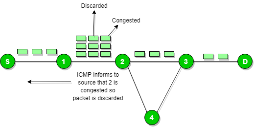
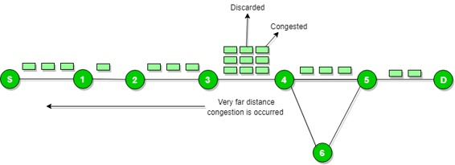
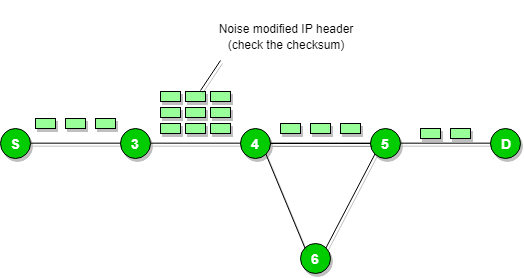
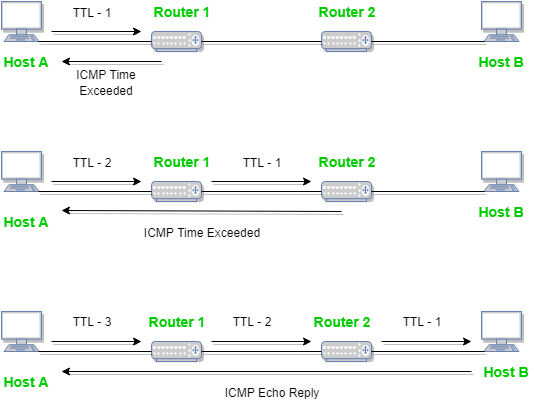
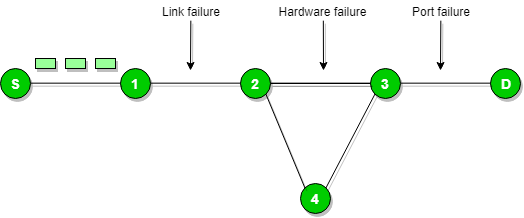

Since IP does not have a inbuilt mechanism for sending error and control messages. It depends on Internet Control Message Protocol(ICMP) to provide an error control. It is used for reporting errors and management queries. It is a supporting protocol and used by networks devices like routers for sending the error messages and operations information.
e.g. the requested service is not available or that a host or router could not be reached.
Source quench message :
Source quench message is request to decrease traffic rate for messages sending to the host(destination). Or we can say, when receiving host detects that rate of sending packets (traffic rate) to it is too fast it sends the source quench message to the source to slow the pace down so that no packet can be lost.

ICMP will take source IP from the discarded packet and informs to source by sending source quench message.
Then source will reduce the speed of transmission so that router will free for congestion.

When the congestion router is far away from the source the ICMP will send hop by hop source quench message so that every router will reduce the speed of transmission.
Parameter problem :
Whenever packets come to the router then calculated header checksum should be equal to recieved header checksum then only packet is accepted by the router.

If there is mismatch packet will be dropped by the router.
ICMP will take the source IP from the discarded packet and informs to source by sending parameter problem message.
Time exceeded message :

When some fragments are lost in a network then the holding fragment by the router will be droped then ICMP will take source IP from discarded packet and informs to the source, of discarded datagram due to time to live field reaches to zero, by sending time exceeded message.
Destination un-reachable :
Destination unreachable is generated by the host or its inbound gateway to inform the client that the destination is unreachable for some reason.

There is no necessary condition that only router give the ICMP error message some time destination host send ICMP error message when any type of failure (link failure,hardware failure,port failure etc) happen in the network.
Redirection message :
Redirect requests data packets be sent on an alternate route. The message informs to a host to update its routing information (to send packets on an alternate route).
Ex. If host tries to send data through a router R1 and R1 sends data on a router R2 and there is a direct way from host to R2. Then R1 will send a redirect message to inform the host that there is a best way to the destination directly through R2 available. The host then sends data packets for the destination directly to R2.
The router R2 will send the original datagram to the intended destination.
But if datagram contains routing information then this message will not be sent even if a better route is available as redirects should only be sent by gateways and should not be sent by Internet hosts.

Whenever a packet is forwarded in a wrong direction later it is re-directed in a current direction then ICMP will send re-directed message.